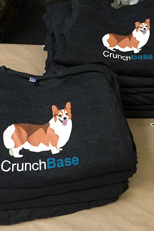
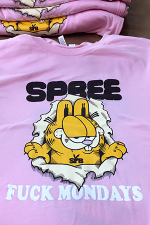
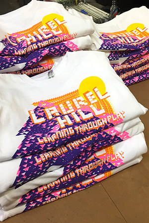
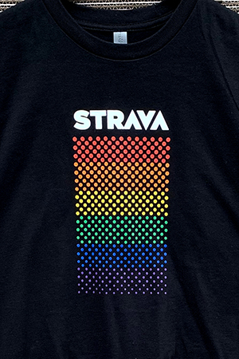
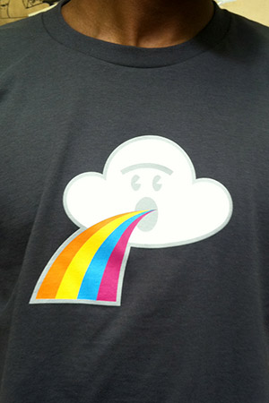

La serigrafía textil es una de las técnicas de personalización textil más demandadas por nuestros clientes y una de nuestras preferidas, ya que el resultado siempre es de alta calidad y los precios de esta producción son muy bajos.
Es un método perfecto para estampar todo tipo de diseños, ya sean imágenes, logos o textos. Se trata de una técnica muy versátil que puede aplicarse sobre múltiples tejidos, como son el algodón, el poliéster o el nylon, entre otros.
Su versatilidad, sumada a lo asequible que resulta aun en grandes tiradas, hace de ella una opción perfecta para clubes deportivos, camisetas promocionales, merchandising o vestuario laboral.

- DISENO DE PRODUCTOS
- SEPARACION DE COLOR
- DISENO GRAFICO
DESARROLLO
- BASE AGUA
- PLASTISOL
- VINILICAS
- 3D - PUFF - RELIEVE
TINTAS
- REMERAS
- BUZOS
- CAMPERAS
- BOLSOS
- PANTALONES, etc.
IMPRIMIBLES





